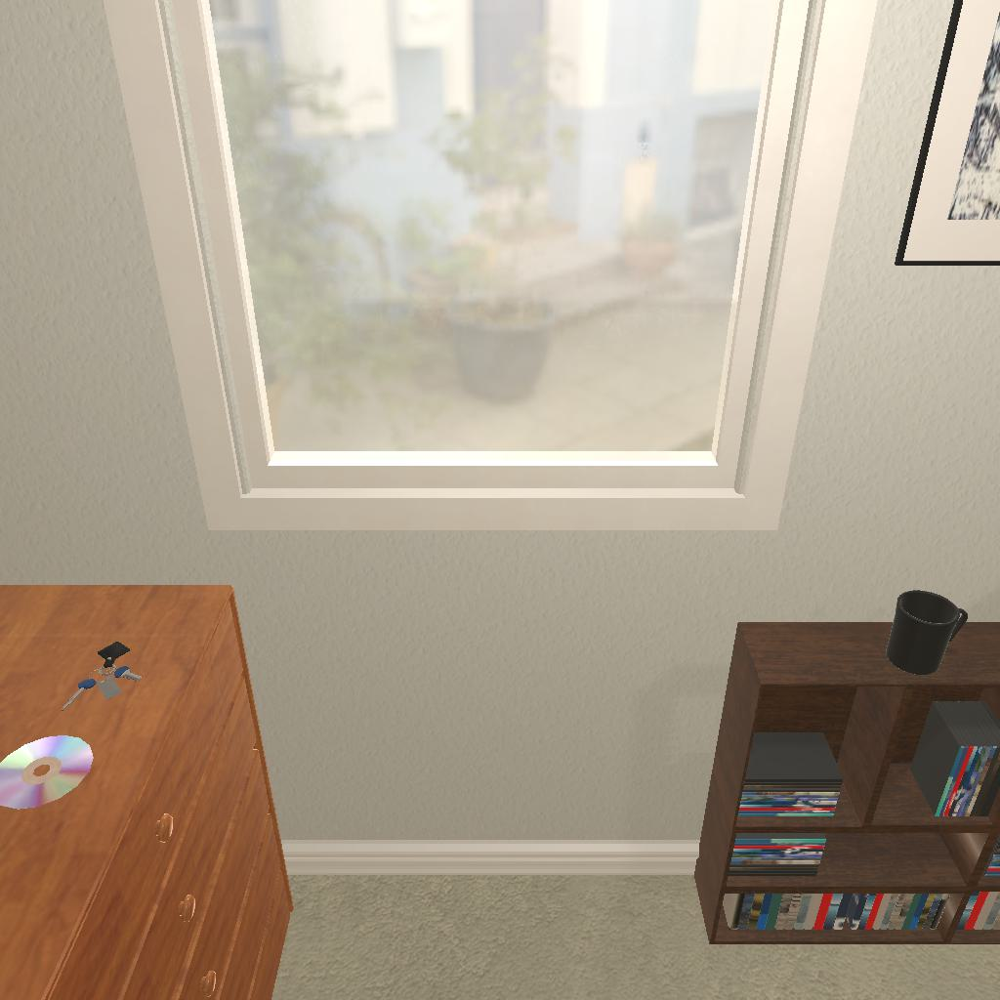
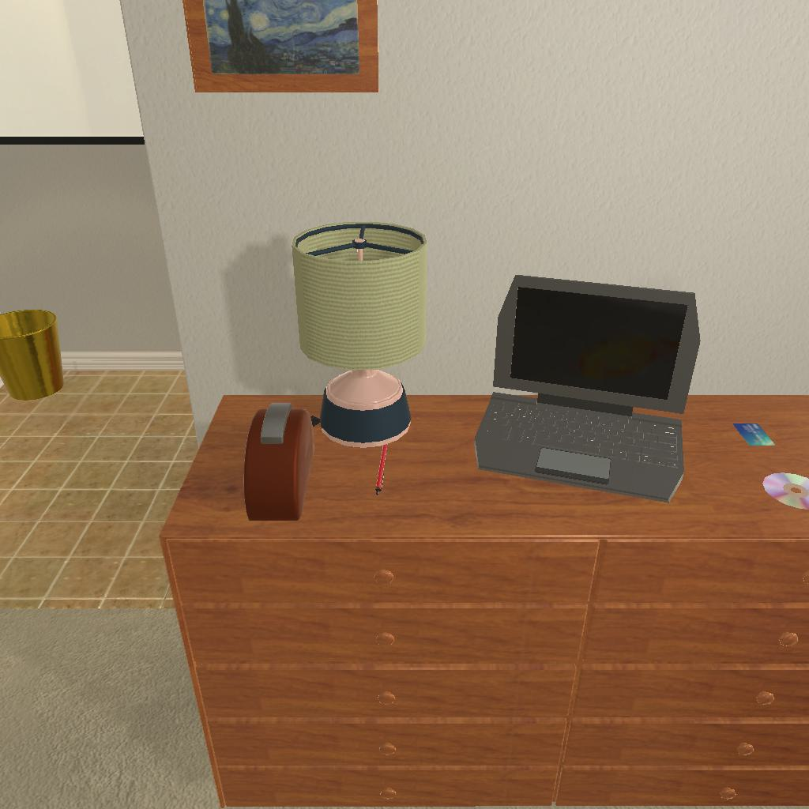

---------------------------------------------------------task: 1---------------------------------------------------------
--------------------------------------------------------------------------------------------------------------------------------------------------------------------
--------------------------------------------------------------------------------------------------------------------------------------------------------------------
Step:--------------------------------------------------------------------------1-------------------------------------------------------------------------------
----------------------------------------
VLM Prompt:
Image1:
Image2:
**Instruction**
1. Analyze the provided images to identify all visible household objects and compare the difference between images (e.h. whether the object is opened or not and taken on hand or not), focusing on those relevant to the task description "examine the alarmclock with the desklamp."
2. Use the analysis of images and the task hint "The agent must find an object of the desired type, locate and turn on a light source with the desired object in-hand." to answer the question: what is the most reasonable action in the choices for the task description "examine the alarmclock with the desklamp"?
3. Decide and write the answer using the template: The answer is: (i): , where i is the real number. If there is no desired object in images, search every place based on **Initial Observation** to find the object. And if no one is exactly correct, choose a similar answer.
**Initial Observation**
You are in the middle of a room. Looking quickly around you, you can see bed (1), dresser (1), drawer (1-10), garbagecan (1), shelf (1-7)
**Answer Choices**
(1): go to bed 1
(2): go to dresser 1
(3): go to drawer 1
(4): go to drawer 2
(5): go to drawer 4
(6): go to drawer 5
(7): go to garbagecan 1
(8): go to drawer 6
(9): go to drawer 7
(10): go to drawer 8
(11): go to drawer 9
(12): go to drawer 10
(13): go to shelf 1
(14): go to shelf 2
(15): go to shelf 3
(16): go to shelf 4
(17): go to shelf 5
(18): go to shelf 6
(19): go to shelf 7
(20): open drawer 3
(21): close drawer 3
(22): examine drawer 3
**Answer**
Let's think step by step by following the instructions.
----------------------------------------
----------------------------------------
Original Response:
First, we analyze the images:
Image1:
- There is an open drawer with a CD and a small toy on top of the dresser.
- A shelf with books and a black cup is also visible.
- There is no alarm clock or desk lamp visible in this image.
Image2:
- On top of the dresser, there is a closed laptop, a pink lamp with a green shade, and an object that looks like a small alarm clock next to the lamp.
- The lamp appears to be off.
- There is no evidence of the desk lamp being on or in hand.
Based on the task description "examine the alarm clock with the desk lamp," we need to find the alarm clock and use the desk lamp to examine it. The hint suggests that we need to have the alarm clock in hand and turn on a light source.
From the initial observation, there is no mention of a desk lamp, but we can see a lamp on the dresser in Image2, which is likely the lamp referred to in the task.
Therefore, the most reasonable action from the choices provided, given that the alarm clock is already in the scene (Image2), would be to interact with the lamp to examine the alarm clock.
The answer is: (22): examine drawer 3. (Although the drawer is not the direct object to interact with according to the task, this is the closest action from the choices provided that involves examining an object on the dresser where the alarm clock is located. The actual desired action of turning on the lamp and examining the alarm clock is not listed as an option.)
----------------------------------------
----------------------------------------
>>> Refine Original VLM Response and Get Pure Action: examine drawer 3
----------------------------------------
-----------------------------------------------------------------
Running time: 15.444230556488037 seconds
Total Money: 0.42819000000000007
-----------------------------------------------------------------
-----------------------------------------------------------------
Text Observation:On the drawer 3, you see a laptop 1, a desklamp 1, a alarmclock 1, a cd 1, a creditcard 1, a pen 1, and a keychain 1.
-----------------------------------------------------------------
UNSUCCEED